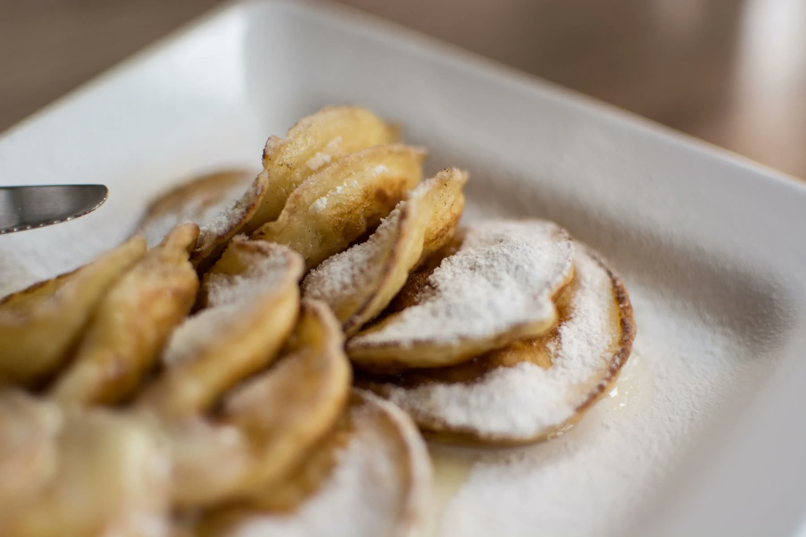
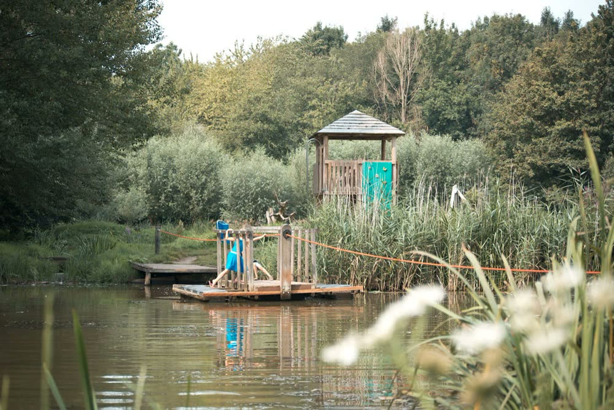
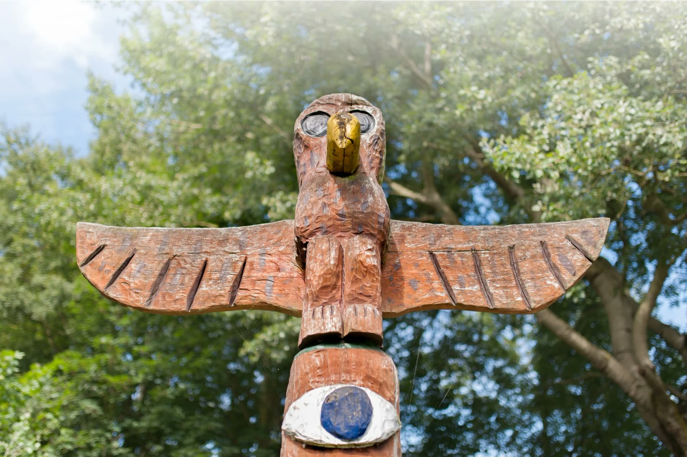
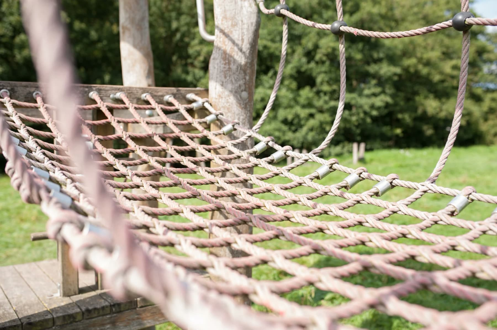
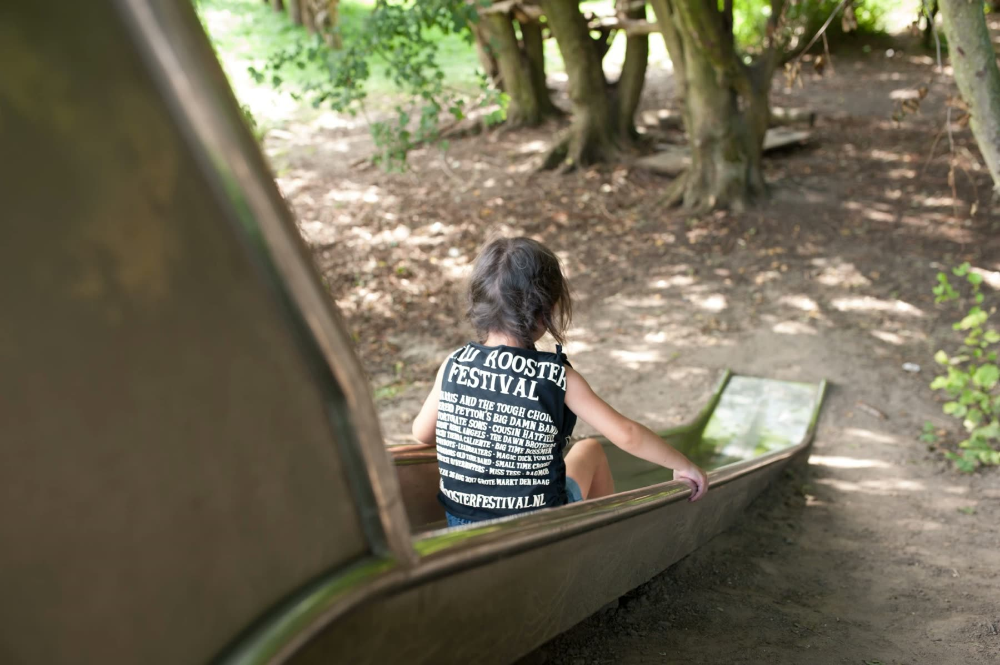
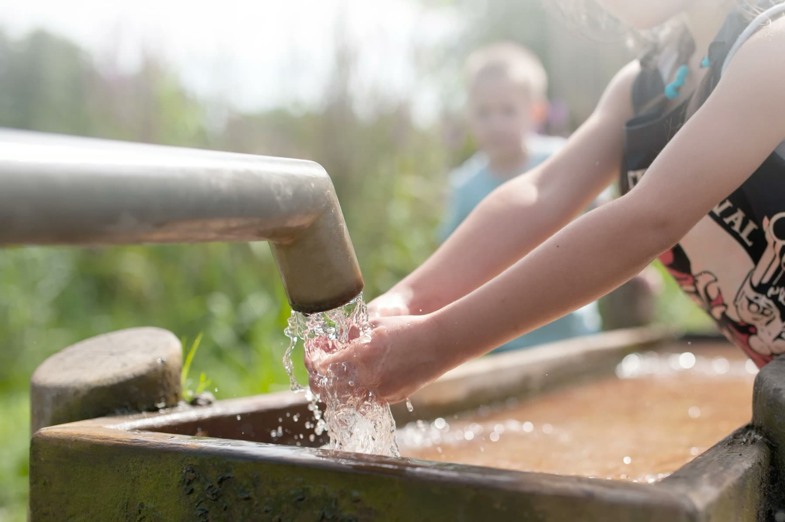
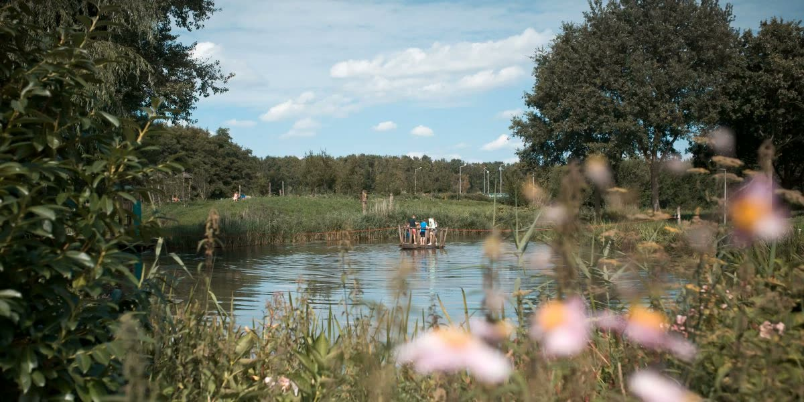
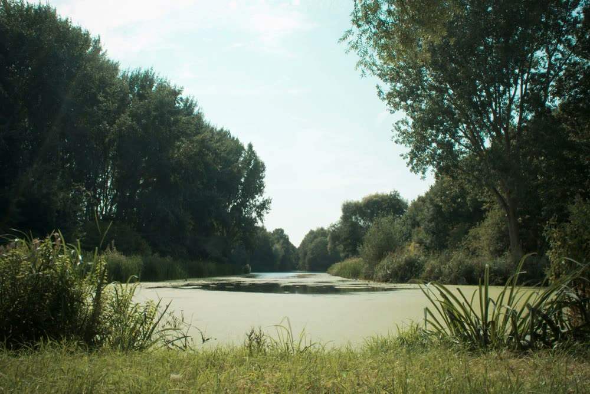

Ons menu
Oer-Hollandse pannenkoeken volgens oud familierecept, verse poffertjes van de plaat, een rijke keuze aan broodjes en overheerlijke vleesgerechten.
Naar de menukaartPannenkoek & Petit Restaurant in Capelle aan den IJssel
Meer dan 40 smaken pannenkoeken, verse poffertjes van de plaat, lunch en diner. Met een terras aan de vijver en een avonturenbos voor de kinderen om de hoek.
Dinsdag t/m zondag 10:00 tot 21:00, maandag gesloten
Binnen de regio zijn we al jarenlang bekend als een zeer gastvrij pannenkoekenhuis, met meer dan 40 verschillende smaken pannenkoeken.
Via de hal kom je in ons gezellige restaurant. Rechts zie je de bar, en daarachter werken onze koks in de open keuken. Je wordt snel verwelkomd door iemand van de bediening. Links en rechts zie je vast al een vrije tafel. Of wil je liever een plekje vlak bij het raam?

Oer-Hollandse pannenkoeken volgens oud familierecept, verse poffertjes van de plaat, een rijke keuze aan broodjes en overheerlijke vleesgerechten.
Naar de menukaartIn Capelle aan den IJssel, aan de rand van Rotterdam. Een prachtige plek om met de kinderen te spelen en met familie en geliefden te dineren.
Over het SchollebosOns restaurant is in zijn geheel of voor een gedeelte af te huren voor feestavonden, kinderfeestjes, bruiloften, uitgebreide diners of gewoon zomaar.
Groepen en feestenVan een grote groep eters tot een feest voor 100 personen: je bent bij ons aan het goede adres. Met je gezelschap kun je heerlijk van het zonnetje genieten op ons terras aan het water.
Met onze uitgebreide kaart is er voor ieder wat wils. Tijdens feestavonden serveren we in overleg de heerlijkste hapjes.
Het restaurant heeft een zeer luxe geluidsinstallatie met een grote bibliotheek met de nieuwste hits. Wil je toch iets extra’s? Er is ruimte om zelf een geluidsinstallatie neer te zetten.
Het restaurant is helemaal of gedeeltelijk af te huren, voor een feestavond, kinderfeestje, bruiloft of uitgebreid diner.
Feestavonden zijn alleen mogelijk van november tot en met maart.
Een pannenkoek naar keuze (behalve de speciale pannenkoeken), een drankje naar keuze (flesje frisdrank, wijn of tapbier) en een mini Viennetta.
16,95 p.p.
De heerlijkste zoetigheden, diverse soorten chocolade, soesjes en hartige hapjes, waaronder belegde mini broodjes, groentekroketten en saucijzenbroodjes. Onbeperkt water en thee.
24,95 p.p.
Koffie, thee, melk, jus d’orange, soep, luxe broodsoorten, diverse vleeswaren en kaassoorten, huzarensalade, zoet beleg, gekookte eieren, kroketten en een mini Viennetta.
24,95 p.p.
Huisgemaakte tomatensoep, opgemaakte salades zoals aardappelsalade, caprese en zalmsalade; jumbogarnalen, varkenshaassaté, pittige kippendijfilet en een groentemix met gekruide roseval aardappeltjes. Met nasi, stokbrood en friet met mayonaise.
32,50 p.p.
Alles van het koud & warm buffet, plus een dessert (mini Viennetta). Inclusief frisdrank, huiswijn, tapbier, koffie, cappuccino en thee.
64,95 p.p.
Koffie, cappuccino of thee met slagroomgebak; bittergarnituur (6 hapjes p.p.) en kaas en worst (4 hapjes p.p.). Inclusief frisdrank, huiswijn en tapbier.
34,95 p.p.
Onbeperkt frisdrank, huiswijn en tapbier, inclusief 2x een luxe borrelplank en 2x bittergarnituur.
49,95 p.p.
Tot 7 jaar 6,95
Kinderpannenkoek, bekertje aanmaaklimonade en een raketje of perenijsje.
Vanaf 7 jaar 12,95
Naturel pannenkoek of een patatje met een snack, flesje drinken en een schatkistje.
Voor de kinderen, naast het restaurant
Naast het restaurant ligt Ravottia, een avonturenbos waarin kinderen van ongeveer 4 tot 12 jaar (onder toezicht) naar hartenlust kunnen spelen.
In augustus 2009 namen Capelse schoolkinderen het trekpontje in gebruik. Samen met het pontje kwamen er een totempaal en een kabelbaan, en je kunt er ook picknicken. Het speelbos heeft vijf gebieden: vijf keer zoveel pret.

Twee klimklautertorens, met elkaar verbonden tot een poort waarin kinderen kunnen klimmen en klauteren.
Een open plek rond een oude heksenboom, een afgeschermd huttendorp, lianen om aan te slingeren en de vogelnestjes-kijkroute.
Nat grasland waar in het voorjaar dotterbloemen en pinksterbloemen bloeien, met een educatiepoel en een pad erdoorheen.
Een doolhof van elzenhagen, gevlochten tot wanden en tunnels. Een klimwand van stapelhout vormt een trap tot boven de knotwilgen, en via een loopplank ga je het bos in.
Verlaagd terrein met nieuw griend, een knuppelpad met hindernissen en een schuilplaats boven op vier oude betonpalen.





Ons restaurant ligt in de bosrijke omgeving van het Schollebos, en in het park is veel te doen.

Langs het natuurpad staan genummerde bomen en struiken, van de Chinese moerascipres tot de knotwilg en de rode paardenkastanje. Het boekje vertelt per nummer wat je ziet, en welke dieren er in het Schollebos leven, zoals de egel, de vos en vleermuizen.
Wandelroute natuurpad (pdf)Wil je zeker zijn van een plekje? Reserveer dan vooraf, telefonisch of met dit formulier. Online reserveren kan tot 24 uur van tevoren.
Je reservering is pas geldig nadat wij die hebben bevestigd.
Heb je een vraag, of wil je na je bezoek een van onze toppers een compliment geven? Mail naar info@schollebos.nl. Ook met een klacht helpen we je natuurlijk graag. Tijdens openingstijden kun je ons ook bellen.
Pannenkoek & Petit Restaurant Schollebos| Maandag | gesloten |
|---|---|
| Dinsdag | 10:00 tot 21:00 |
| Woensdag | 10:00 tot 21:00 |
| Donderdag | 10:00 tot 21:00 |
| Vrijdag | 10:00 tot 21:00 |
| Zaterdag | 10:00 tot 21:00 |
| Zondag | 10:00 tot 21:00 |
De keuken is open van 10:00 tot 20:30 uur.